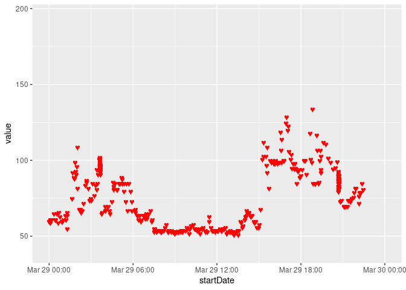
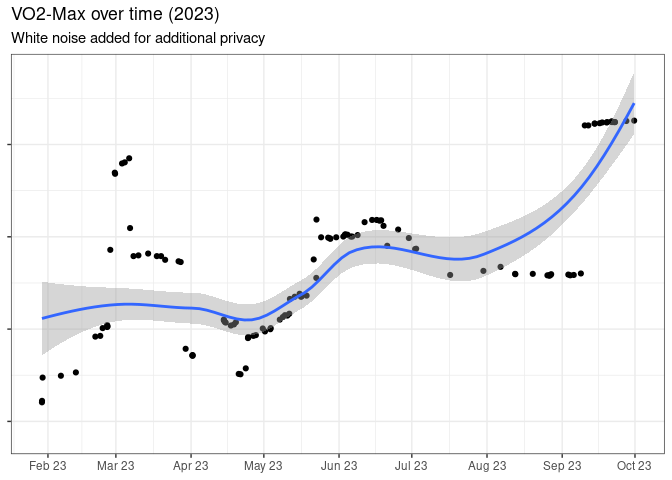
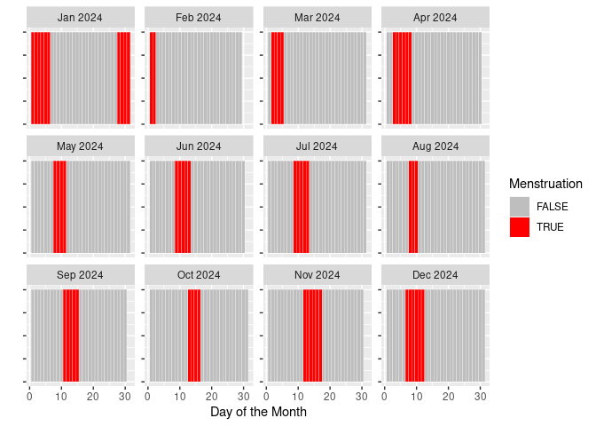
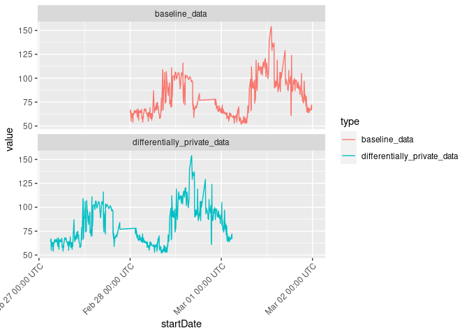
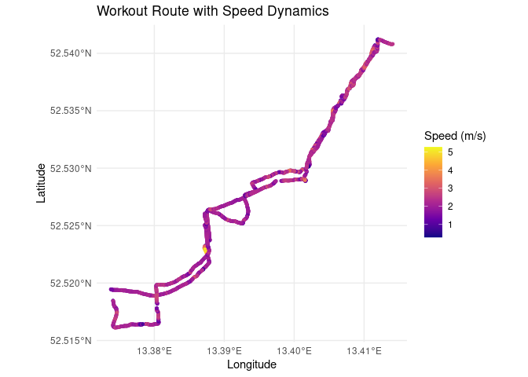
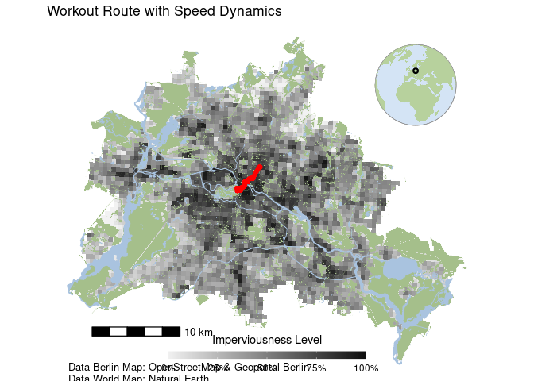

This ReadMe contains an overview of the most important functions of the health2R package. A full documentation for each of the respective functions can be found in the function vignettes:
- Import Apple Health Data:
vignette("01_import_apple_data") - Analyse Health Data:
vignette("02_analyse_health_data") - Add Differential Privacy:
vignette("03_differential_privacy") - Analyse Workout Data:
vignette("04_analyse_workout_data")
Installation
The package can be installed from Github:
githubinstall::install_github("marianapatino/health2R")Importing Data
Apple Health data is stored in very large xml files which can be exported as a zip file, but have tens of millions of rows (e.g. for many data types, health data is logged and stored at the second level). Therefore, the import_healthdata and import_workouts functions take an exported zip file as input and parse it into an R data format. Due to the very large amount of rows, this can take up to several minutes, and should therefore be done once per updated health file, which can subsequently be stored as an rds or csv file.
Importing Health Data
First, we import, parse and save the an example dataset of health data. A dynamic progress bar tracks the progress of the parsing process.
library(health2R)
parsed_healthdata <-
import_healthdata(filename = "../dev/data/mp_export.zip",
datasource = "apple")
To get a first overview, we sample a random subset of 5 rows from the parsed data frame:
parsed_healthdata %>%
sample_n(5)
#> # A tibble: 5 × 9
#> type sourceName sourceVersion unit device startDate
#> <chr> <chr> <chr> <chr> <chr> <dttm>
#> 1 HKQuantityTypeIdent… Mariana ’… 9.1 count <<HKD… 2022-12-18 07:51:12
#> 2 HKQuantityTypeIdent… Mariana ’… 9.3.1 count <<HKD… 2023-05-05 23:23:32
#> 3 HKQuantityTypeIdent… Mariana ’… 10.0 coun… <<HKD… 2023-10-03 09:06:01
#> 4 HKQuantityTypeIdent… Mariana ’… 9.5.1 kcal <<HKD… 2023-06-20 16:07:06
#> 5 HKQuantityTypeIdent… Mariana ’… 9.6.1 kcal <<HKD… 2023-08-26 15:01:33
#> # ℹ 3 more variables: endDate <dttm>, creationDate <dttm>, value <chr>After the parsing is complete, we store the parsed file as an ´rds´ file:
saveRDS(parsed_healthdata,
"../dev/data/parsed_healthdata_mp.rds")Importing Workout Data
Similarly, the import_workouts function imports workouts as a list of gpx data, where the name of the individual list entries is the route name.
parsed_workouts <-
import_workouts(filename = "../dev/data/mp_export.zip",
datasource = "apple")
saveRDS(parsed_workouts,
"../dev/data/parsed_apple_workouts_mp.rds")
parsed_workouts[1] %>%
map(~ .x %>% head(5))
#> $`Route 2022-03-28 9:23pm`
#> # A tibble: 5 × 8
#> lat lon ele time speed course hAcc vAcc
#> <dbl> <dbl> <dbl> <dttm> <dbl> <dbl> <dbl> <dbl>
#> 1 10.5 -84.8 633. 2022-03-28 17:54:24 0.689 46.3 1.75 1.74
#> 2 10.5 -84.8 633. 2022-03-28 17:54:25 0.714 50.0 1.56 1.53
#> 3 10.5 -84.8 634. 2022-03-28 17:54:26 0.355 43.9 1.47 1.36
#> 4 10.5 -84.8 634. 2022-03-28 17:54:27 0.146 23.7 1.43 1.23
#> 5 10.5 -84.8 634. 2022-03-28 17:54:28 0.0933 354. 1.42 1.12Analyse Health Data
After having once parsed and saved the data as rds files, it can be read and further analysed.
parsed_healthdata <-
readRDS(file.path("PATH_TO_RDS/parsed_healthdata_mp.rds"))
parsed_workouts <-
readRDS(file.path("PATH_TO_RDS/parsed_apple_workouts_mp.rds"))Analyse Heart Rate Data
The dedicated function for extracting and analysing cardiovascular data is called get_cardio and takes as input an already parsed healthdata object, or the raw zip file. Furthermore, the variable var allows the user to pick which cardio-related variable should be extracted, and currently takes as options heartrate, resting, walkingAverage, workout, variability, and recovery.
hr_data <- get_cardio(health_db = parsed_healthdata,
var = "heartrate")
hr_data %>% select(type,sourceName,unit,startDate,value) %>% head()
#> # A tibble: 6 × 5
#> type sourceName unit startDate value
#> <chr> <chr> <chr> <dttm> <dbl>
#> 1 HKQuantityTypeIdentifierHeartRate Mariana ’s … coun… 2022-03-28 05:55:33 69.9
#> 2 HKQuantityTypeIdentifierHeartRate Mariana ’s … coun… 2022-03-28 05:56:57 68
#> 3 HKQuantityTypeIdentifierHeartRate Mariana ’s … coun… 2022-03-28 05:53:48 70
#> 4 HKQuantityTypeIdentifierHeartRate Mariana ’s … coun… 2022-03-28 05:58:41 66
#> 5 HKQuantityTypeIdentifierHeartRate Mariana ’s … coun… 2022-03-28 06:05:40 60
#> 6 HKQuantityTypeIdentifierHeartRate Mariana ’s … coun… 2022-03-28 06:10:28 61
library(ggplot2)
ggplot(hr_data,
aes(x = startDate, y = value)) +
geom_text(aes(label = "\u2665"), color = "red", size = 3) +
scale_x_datetime(limits = c(as.POSIXct("2022-03-29 00:00:00"),
as.POSIXct("2022-03-29 23:59:59")))
Analyse VO2-Max
Furthermore, the get_vo2max function obtains and the VO2-Max performance data, either for the full available time range (default), of for a specific start_date and end_date.
vo2max_data <- get_vo2max(health_db = parsed_healthdata,
start_date = as_date("2023-01-01"),
end_date = as_date("2023-11-01"))We can now VO2-Max (with differential noise added for privacy reasons):
Plot and smoothed trend overtime:
ggplot(private_vo2,
aes(x = startDate,
y = value)) +
geom_point() +
scale_x_datetime(limits = c(as.POSIXct("2023-01-29 00:00:00"),
as.POSIXct("2023-10-01 00:00:00")),
date_breaks = "1 month",
date_labels = "%b %y") +
geom_smooth() +
theme_bw() +
theme(axis.text.y = element_blank()) +
labs(x = NULL, y = NULL,
title = "VO2-Max over time (2023)",
subtitle = "White noise added for additional privacy")
#> `geom_smooth()` using method = 'loess' and formula = 'y ~ x'
#> Warning: Removed 27 rows containing non-finite values (`stat_smooth()`).
#> Warning: Removed 27 rows containing missing values (`geom_point()`).
Analyse Menstrual Cycle
menstruation_cycle_data <- get_menstruation_cycle(health_db = parsed_healthdata)Of course, female menstrual cycles are a sensitive piece of data, which would not be appropriate to be exposed in this online documentation. Instead of plotting someone’s actual cycle data, we therefore simulate random data in a similar format as they would be exported by the get_menstruation_cycle function of the package. For further details and the source code of the simulate_year_cycles function, please refer to the vignette at vignette("02_analyse_health_data").
set.seed(12345) # for reproducibility
# Use the function to simulate cycles between two dates
start_date <- as.Date("2024-01-01")
end_date <- as.Date("2024-12-31")
simulated_menstrual_data <- simulate_year_cycles(start_date, end_date)
simulated_menstrual_data %>%
mutate(Month = floor_date(Date, "month"),
Day = day(Date)) %>%
ggplot(aes(x = Day, y = 1,fill = Menstruation)) +
geom_tile(color = "white") + # Use tiles
scale_fill_manual(values = c("TRUE" = "red", "FALSE" = "grey")) +
facet_wrap(~Month, scales = "free_y",
labeller = labeller(Month = function(x) format(as.Date(as.character(x), "%Y-%m-%d"), "%b %Y"))) + # Custom labels
labs(fill = "Menstruation", x = "Day of the Month", y = "") +
theme(axis.text.y = element_blank(),
strip.text.y = element_text(angle = 0)) 
Adding Differential Privacy
Health data data can repesent quite sensitive pieces of information, which in some cases should be avoided to be leaked in an inappropriate context. To still be able to use one’s wearable data, the health2R package provides a function called add_differential_privacy, which takes a duration object as input for the variable max_differential_privacy_offset, and subsequently makes a data frame differentially private by adding random noise to all time stamps in the data, while retaining the relationship between the respective time data.
First we plot some example heart rate data:
parsed_healthdata <- read_rds("path/to/your/health_data.rds")
rhr_data <- get_cardio(health_db = parsed_healthdata,
var = "heartrate",
start_date = as_date("2023-02-28"),
end_date = as_date("2023-03-02"))
rhr_data %>%
select(type,sourceName,unit,startDate,value) %>%
head(3)
#> # A tibble: 3 × 5
#> type sourceName unit startDate value
#> <chr> <chr> <chr> <dttm> <dbl>
#> 1 HKQuantityTypeIdentifierHeartRate Mariana ’s … coun… 2023-02-28 00:00:07 64
#> 2 HKQuantityTypeIdentifierHeartRate Mariana ’s … coun… 2023-02-28 00:07:58 67
#> 3 HKQuantityTypeIdentifierHeartRate Mariana ’s … coun… 2023-02-28 00:04:57 66And the differentially privat data, which has been privatized with a random noise addition of up to 2 days. This duration object parameter can also hold shorter periods as appropriate, e.g. duration(3600,"seconds") or similar.
priv_data <-
rhr_data %>%
select(type,sourceName,unit,startDate,value) %>%
add_differential_privacy(max_differential_privacy_offset = lubridate::duration(2,"days"))
priv_data %>% head(3)
#> # A tibble: 3 × 5
#> type sourceName unit startDate value
#> <chr> <chr> <chr> <dttm> <dbl>
#> 1 HKQuantityTypeIdentifierHeartRate Mariana ’s … coun… 2023-02-27 03:01:38 64
#> 2 HKQuantityTypeIdentifierHeartRate Mariana ’s … coun… 2023-02-27 03:09:29 67
#> 3 HKQuantityTypeIdentifierHeartRate Mariana ’s … coun… 2023-02-27 03:06:28 66Plotting the two time series shows the successful addition of obfuscating noise:
combined_data <- bind_rows(rhr_data %>% mutate(type = "baseline_data"),
priv_data %>% mutate(type = "differentially_private_data"))
ggplot(combined_data,
aes(x = startDate,
y = value,
col = type)) +
geom_line() +
facet_wrap(~type,nrow = 2) +
scale_x_datetime(date_breaks = "1 day",
date_labels = "%b %d %H:%M UTC") +
theme(axis.text.x = element_text(angle = 45,vjust = 1,hjust = 1))
Plotting Workout Data
#devtools::install_github("EcoDynIZW/d6berlin")
library(d6berlin)
library(lubridate)
library(sf)
#> Linking to GEOS 3.8.0, GDAL 3.0.4, PROJ 6.3.1; sf_use_s2() is TRUEWe first load the list of all workouts which we previously parsed in vignette("01_import_apple_data") and pick one specific workout:
workout_data <- parsed_workouts$`Route 2023-10-08 12:35pm`
sf_data <- workout_data %>%
st_as_sf(coords = c("lon", "lat"), crs = 4326) %>%
st_transform(crs = 3857) # Using Web Mercator for visualizationTo not leak any specific protected location, such as one’s home, we use the function remove_start_end which removes the first and last x minutes of a workout:
sf_data_obscured <- remove_start_end(sf_data, minutes = 5)We can then plot the workout and the respective velocity:
ggplot(data = sf_data_obscured) +
geom_sf(aes(color = speed), size = 1, alpha = 0.7) +
scale_color_viridis_c(name = "Speed (m/s)",
option = "C",
limits = range(sf_data$speed, na.rm = TRUE)) +
theme_minimal() +
labs(title = "Workout Route with Speed Dynamics",
x = "Longitude",
y = "Latitude") +
theme(legend.position = "right")
To plot the workout against a real city map of Berlin, we use the d6berlin package:
base_map <- base_map_imp(color_intensity = 1, resolution = 500, globe = TRUE)
# Combine the base map with your data
berlin_map <-
base_map +
geom_sf(data = sf_data_obscured, aes(color = speed), col = "red",size = 1, alpha = 0.7) +
labs(title = "Workout Route with Speed Dynamics")+
guides(color = FALSE)
# Print the combined map
print(berlin_map)